Unidad 6: Gráficos base en R
Rubén Muñoz
2024-01-28
Bienvenida
Bienvenidos en esta ocasión aprenderemos a hacer los principales gráficos en R!!

Para comenzar usaremos unos datos anónimos de alumnos de Bio, los
cuales se encuentran en la carpeta data.
# Los cargamos y guardamos en una variable.
datosEstBio <- read.csv("../data/Datos_alumnos.csv")
head(datosEstBio)## alumnx prom estatura peso edad sexo edo.civil n.herm p.ciud becado
## 1 A1 8.0 1.78 62 21 Hombre Sin 1 Sur No
## 2 A2 7.7 1.50 46 22 Mujer Sin 0 Sur No
## 3 A3 7.9 1.60 46 20 Mujer Sin 1 Sur Si
## 4 A4 9.0 1.55 48 19 Mujer Sin 3 Sur Si
## 5 A5 7.6 1.58 49 20 Mujer Con 2 Este Si
## 6 A6 8.0 1.59 49 19 Mujer Sin 2 Sur No
## horas.sueno tipo.biol diop t.sangre
## 1 12 Campo 3.75 O+
## 2 6 Lab 0.00 O+
## 3 6 Campo 0.00 A+
## 4 5 Lab 2.00 AB-
## 5 7 Campo 0.50 O+
## 6 6 Lab 4.00 O+colnames(datosEstBio)## [1] "alumnx" "prom" "estatura" "peso" "edad"
## [6] "sexo" "edo.civil" "n.herm" "p.ciud" "becado"
## [11] "horas.sueno" "tipo.biol" "diop" "t.sangre"Paletas de colores
Antes de comenzar quiero mostrar algunos recursos para generar paletas de color. La primer forma consiste en definir los colores manualmente en un vector:
pal1 <- c("blue", "green", "orange")La segunda forma se puede hacer al usar la función
colorRampPalette() y definiendo cada color. El resultado
será una función que cree un gradiente por los colores definidos a la
cual le especificaremos el número de colores que debe generar.
# Crear una paleta de colores personalizada
mi_paleta <- colorRampPalette(c("blue", "green", "orange"))
mi_paleta(5) #5 colores## [1] "#0000FF" "#007F7F" "#00FF00" "#7FD200" "#FFA500"Existen diferentes colores en R. La Universidad de Columbia tiene una lista de colores que te pueden ayudar a elegir para los dos métodos anteriores. Aquí disponible
El último método que veremos será generar paletas con esta página. R CHARTS. La cual permite cargar la paleta de colores que nos guste usando paquetes de R. Por ejemplo, si nos gusta la paleta de colores “paletteer_d(”colorBlindness::Blue2Orange10Steps”)“:
# Cargamos paquetes con paletas de colores
library(paletteer)
library(colorBlindness)
## Obtener la paleta "Blue2Orange10Steps"
p1 <- paletteer_d("colorBlindness::Blue2Orange10Steps", 4)### El número como argumento indica cuántos colores queremos de esa paleta. Nota: tiene un máximo.
palVerde <- paletteer_d("ggsci::green_material") 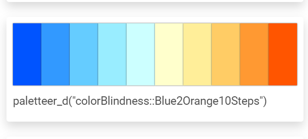
Gráfico de puntos
Para generarlo podemos usar la función plot() indicando
los datos del eje X y del Y. En este caso haremos un
gráfico de dispersión de la altura contra el peso:
plot(x = datosEstBio$estatura, y = datosEstBio$peso)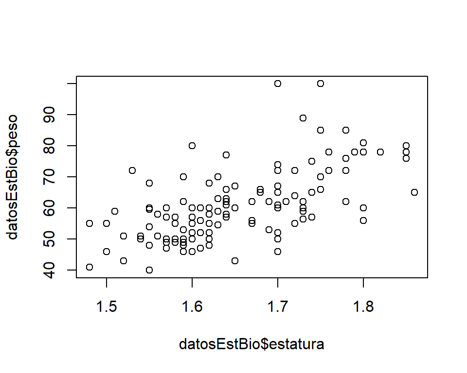
Existe una gran cantidad de parámetros para personalizar nuestro gráfico. Aquí algunos de ellos:
par(mfrow= c(1,2))
plot(x = datosEstBio$estatura, y = datosEstBio$peso,
main = "Estatura vs Peso", cex.main = 1.4,#Título
xlab = "Estatura(cm)", ylab = "Peso(Kg)", #Título de los ejes
xlim = c(1.40, 1.9), ylim = c(0,120), # Máx y min del eje X y Y
pch = 21, cex = 0.8,# Tipo y tamaño de puntos
bg = "orange2", col = "gray85", #Color puntos
bty = "L" # Gráfico sin márgenes superior y derecho
)
# Además es posible agregar una línea de tendencia con abline() y cambiar color por categoría
## Color por categoría
plot(x = datosEstBio$estatura, y = datosEstBio$peso,
main = "Estatura vs Peso", cex.main = 1.4,
xlab = "Estatura(cm)", ylab = "Peso(Kg)",
xlim = c(1.40, 1.9), ylim = c(0,120),
pch = 21,
col = factor(datosEstBio$sexo) ### Color por categoría
) +
## Añadir la línea de tendencia
abline(lm(datosEstBio$peso ~ datosEstBio$estatura),
lwd = 1.5, # Tamaño de línea
col = "darkblue" #Color de línea
) 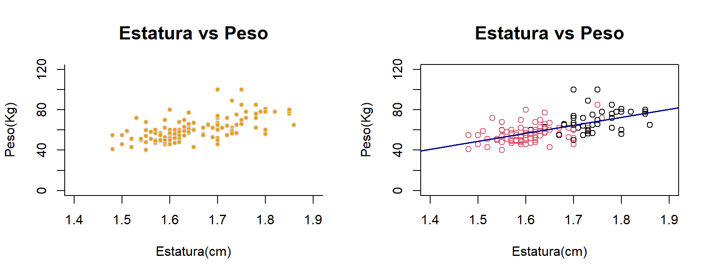
Gráfico de líneas
Se genera de forma similar. Para este ejemplo mostraremos con otro gráfico.
par(mfrow=c(1,3)) #Este argumento nos ayuda a poner un lienzo con varios gráficos. 1 Fila y 3 columnas.
#Gráfico de puntos
plot(x = datosEstBio$estatura, y = datosEstBio$peso,
xlab = "Estatura(Cm)", ylab = "Peso(Kg)",
main = "Estatura vs Peso", cex.main = 1.4,
xlim = c(1.40, 1.9), ylim = c(0,120),
pch = 21,
bg = "orange2", col = "orange3"
)
# Gráfico de líneas Parámetro type = "l"
plot(x = sort(datosEstBio$estatura[c(11:20)]), y = datosEstBio$peso[c(11:20)],
type = "l" ,
xlab = "Estatura(Cm)", ylab = "Peso(Kg)",
main = "Líneas: Estatura vs Peso", cex.main = 1.4,
col = "darkblue"
)
# Gráfico de líneas y puntos. Parámetro type = "o"
plot(x = sort(datosEstBio$estatura[c(11:20)]), y = sort(datosEstBio$peso[c(11:20)]),
type = "o" , pch = 21,
xlab = "Estatura(Cm)", ylab = "Peso(Kg)",
main = "Líneas+puntos: Estatura vs Peso", cex.main = 1.2,
bg = "orange2",col = "orange4"
)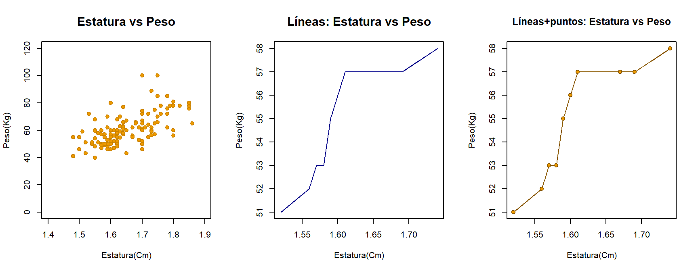
Añadiendo elementos a los gráficos
Antes de continuar debemos conocer que así como dentro de cada función del plot existen parámetros, también podemos agregar elementos sobre nuestro gráfico creado. Algunos elementos son:
- Textos
- Leyendas
- Puntos
- Líneas
- Polígonos
Textos
Se realizan con la función text()
# Elementos en los gráficos
## Creamos plot
plot(x = datosEstBio$estatura, y = datosEstBio$peso,
xlab = "Estatura(cm)", ylab = "Peso(Kg)",
main = "Añadiendo elementos",
col = factor(datosEstBio$sexo),
bg = factor(datosEstBio$sexo),
pch = 21)## Añadimos texto
text(x = 1.5, y = 80, # Posición
label = "Hola:)", # Texto
col = "darkblue", # Color
cex = 0.9) Leyendas
Se realizan con la función legend()
## Añadimos una leyenda
legend("topleft", #Posición
inset = 0.05, # Margen
title = "Simbología", #Título
legend = c("H", "M"),
cex = 0.8,#Simbología
col = factor(datosEstBio$sexo),
pch = 21,
box.col = "gray80", # Color del recuadro
horiz = T)Puntos
Se realizan con la función points()
## Añadimos puntos
points(estaturaSangreA, pesoSangreA,
pch = 17,
cex = 1.3,
col = "blue3")
### Agregamos su leyenda
legend("topright", #Posición
inset = 0.05, # Margen
legend = c("A+"),
cex = 0.8,#Simbología
col = "blue",
pch = 15,
box.col = "gray80", # Color del recuadro
horiz = T)# OrientaciónLíneas
Se realizan con la función abline() o
arrows()
## Añadimos líneas
### Líneas continuas
abline(lm(datosEstBio$peso ~ datosEstBio$estatura),
lwd = 2, # Tamaño de línea
col = "orange" #Color de línea
)
### flechas o barras de error
arrows( x0 = datosEstBio$estatura[1:10], # Inicio de línea en X
x1 = datosEstBio$estatura[1:10], #Final de línea
y0 = datosEstBio$peso[1:10]-2, # Inicio en Y
y1 = datosEstBio$peso[1:10]+2, # Final en Y
code = 3, # Tipo de línea (1 = arrow)
angle = 90, # Ángulo
col = "black",
lwd = 2)Polígonos
Se realizan con la función polygon()
## Polígonos
polygon(datosEstBio$estatura[100:103], # Coordenadas X
datosEstBio$peso[100:103], # Coordenadas Y
col=rgb(0, 0, 1, 0.1) #Color definido en RGB
)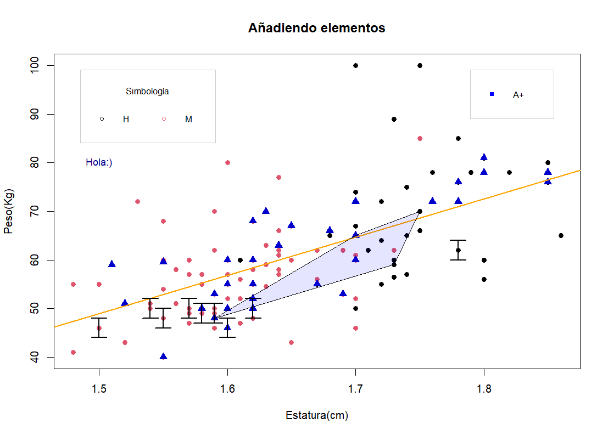
Gráfico de barras
Para hacer un gráfico de barras usamos la función
barplot(). Además, necesitaremos variables categóricas con
frecuencia. En este caso, averiguaremos la cantidad de hombres y mujeres
en el curso hipotético de Bio.
# Usamos la función barplot()
## Podemos usar parámetros similares a la función plot()
###Guardamos colores deseados
colores <- c("#BA68C8", "#5E35B1" )
### Realizamos un table() para conocer el num. de estudiantes por sexo.
frecSexo <- table(datosEstBio$sexo)
# Gráfico de barras barplot()
barplot(frecSexo, # Datos con conteo
main = "Número de H y M en el curso",
xlab="Sexo", # Tíulo del eje X
ylab="Frecuencia", # Título del eje Y
border = colores, col = colores) # Colores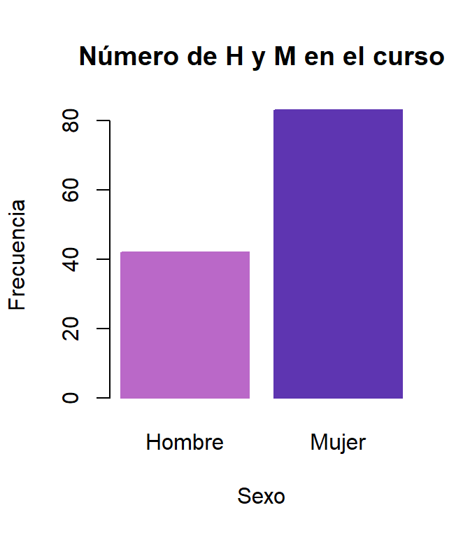
Gráfico de barras con subcategorías
En este caso averiguaremos cuántos hombres y mujeres hay en el grupo y de qué partes de la ciudad son. Para ello necesitamos las dos variables en una tabla de contingencia y lo podemos lograr de la siguiente manera:
(sexoXParteDeLaCiudad <- table(datosEstBio$p.ciud, datosEstBio$sexo))##
## Hombre Mujer
## Este 11 12
## Norte 9 22
## Oeste 2 9
## Sur 20 40Ahora podemos construir nuestro gráfico:
# Gráfico de barras
barplotBar <- barplot(sexoXParteDeLaCiudad,
beside=TRUE, # Este argumento indica si debe poner las barras apiladas o una a lado de otra
xlab="Sexo", # Tíulo del eje X
ylab="Frecuencia",
ylim= c(0,50),
names.arg = c("Hombres", "Mujeres"), # Nombre de cad grupo
main = "Mujeres y Hombres por parte de la Ciudad",
col = p1, border = p1)
### Agregamos su leyenda
legend("topleft", #Posición
inset = 0.05, # Margen
title = "CDMX",
legend = rownames(sexoXParteDeLaCiudad),#Simbología
cex = 0.8,
title.cex = 0.7, #Tamaño del título
text.width = 0.3, # Ancho del texto
col = p1,
pch = 15,
adj = c(0.5,0.5), # Justificado de la leyenda
xjust = 0, yjust = 0,# Justificado del texto
box.col = "gray90" # Color del recuadro
)
#Etiquetas del conteo
text(x = as.vector(barplotBar), y = sexoXParteDeLaCiudad+2,
label = sexoXParteDeLaCiudad, cex = 0.9)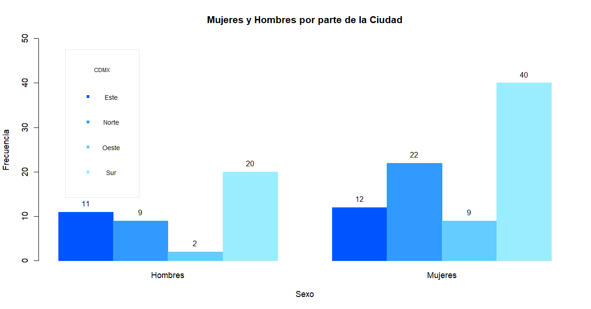
Gráfico de barras apilado
Para generar un gráfico de barras apiladas cambiamos la
opción a besides = FALSE
barplot(sexoXParteDeLaCiudad,
beside=F, xlab="Sexo", # Tíulo del eje X
ylab="Frecuencia",
main = "Mujeres y Hombres por parte de la Ciudad ",
col = p1, border = "gray90"
)
legend("topleft", #Posición
inset = 0.05, # Margen
title = "CDMX",
legend = rownames(sexoXParteDeLaCiudad),
cex = 0.8,#Simbología
col = p1,
pch = 15,
box.col = "gray90" # Color del recuadro
)# Orientación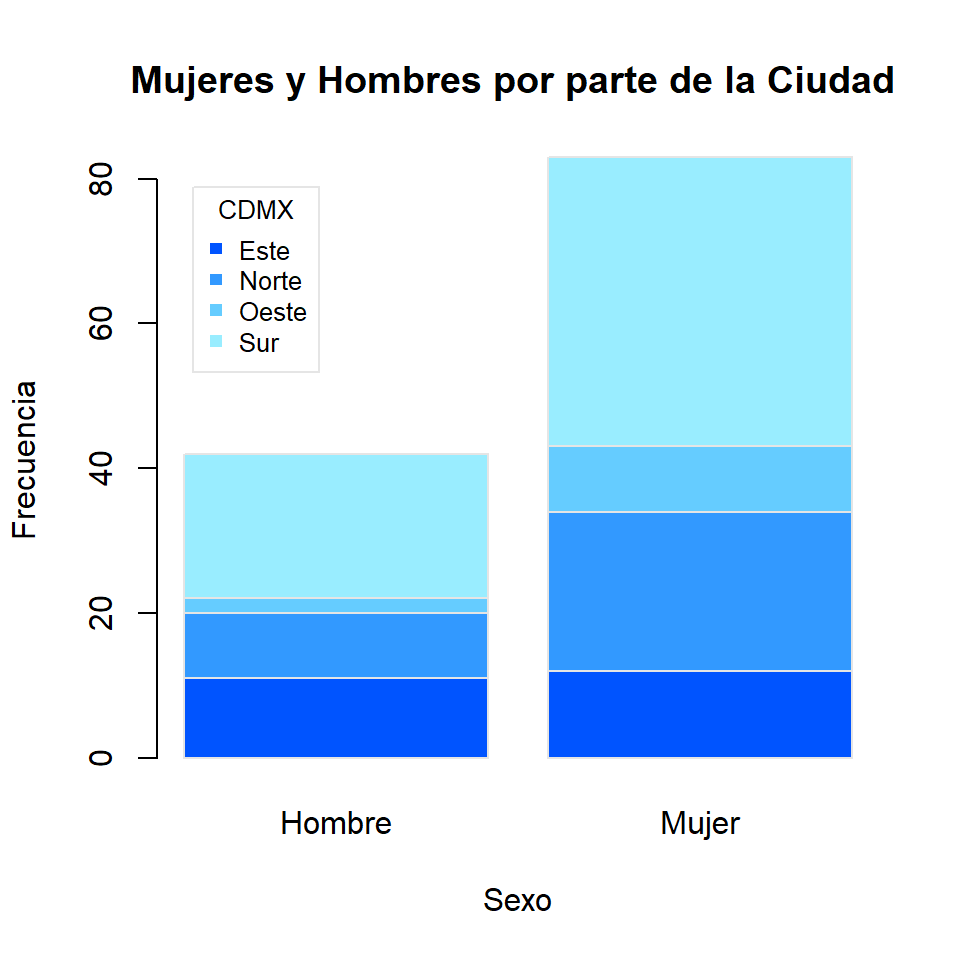
Gráfico de barras con barras de desv. estándar
Para esto usaremos la función arrows() la cual agregará
elementos a nuestro gráfico.
En este caso graficaremos el promedio de la estatura de las personas según la parte de la ciudad que son.
Para ello primero calculamos la media según la parte de la ciudad con una expresión muy útil.
promEstNorte <- mean(datosEstBio$estatura[datosEstBio$p.ciud == "Norte"])
promEstSur <- mean(datosEstBio$estatura[datosEstBio$p.ciud == "Sur"])
promEstEste <- mean(datosEstBio$estatura[datosEstBio$p.ciud == "Este"])
promEstOeste <- mean(datosEstBio$estatura[datosEstBio$p.ciud == "Oeste"])
#Ahora crearemos un data frame para almacenar la info
estaturaXPCiudad <- data.frame( "Promedio" = c(promEstNorte,promEstSur,
promEstEste, promEstOeste),
"p.ciudad" = c("Norte", "Sur", "Este", "Oeste")
)Ahora debemos calcular la desviación estándar con la función
sd() de la misma forma que con los promedios de la estatura
por parte de la ciudad. También podemos usar un ciclo for
para que realice esta operación por nosotrxs.
Ahora con los promedios y la sd podemos construir nuestro gráfico.
# Creamos nuestro gráfico de barras
# Crearemos una nueva paleta de color
library(paletteer)
pal2 <- paletteer_d("ggsci::purple_material")
barplot(PromXCDMX$promedio,
name=PromXCDMX$p.ciud,
xlab = "Estudiantes x parte de la CDMX",
ylab = "Promedio de la estatura (cm)",
ylim = c(0,2),
width= 0.4,
col = p1, border = F
) +
arrows( x0= c(0.28, 0.76, 1.23, 1.72),
y0=PromXCDMX$promedio - PromXCDMX$sd,
y1=PromXCDMX$promedio + PromXCDMX$sd,
code=3, angle=90,
col = "#6A1B9A",
length=0.12, lwd = 1.5)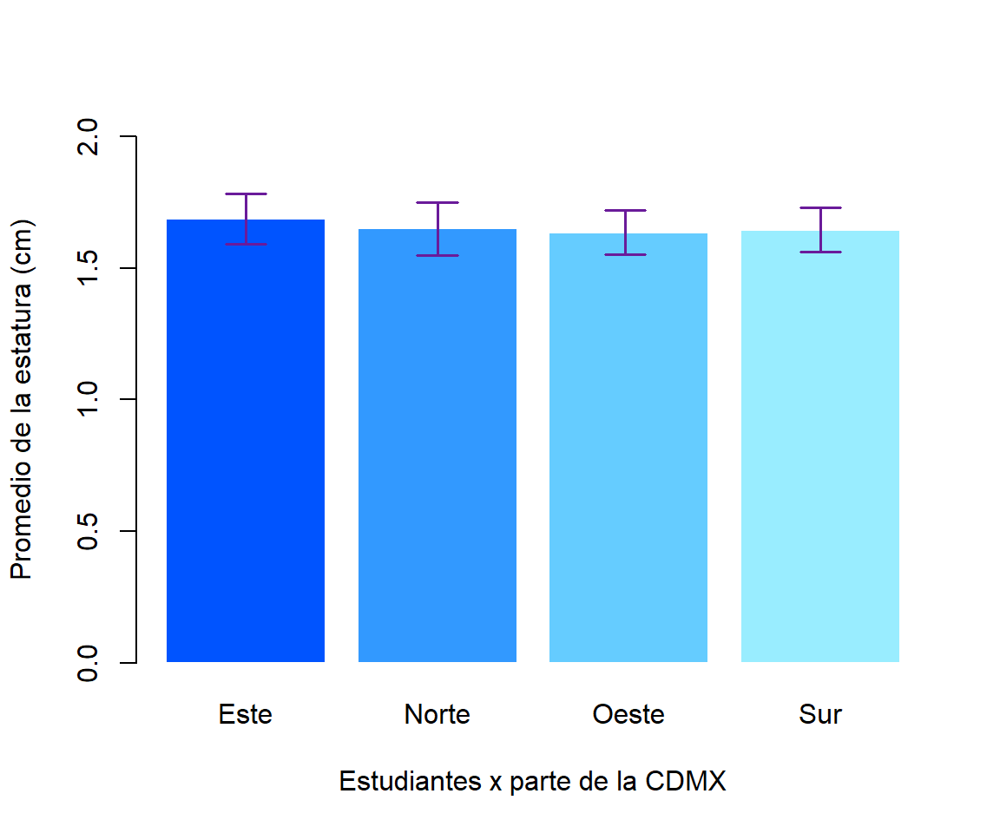
## numeric(0)Boxplot
Para hacer un gráfico boxplot (caja y bigotes) usamos la función
boxplot(). Este tipo de gráficos nos ayuda a ver la
distribución de nuestros datos ya que nos brinda datos de los cuartiles
(1o, 2o y 3er) así como del máximo y el mínimo.
Para este ejemplo compararemos el promedio de los estudiantes
par(mfrow = c(1,2))
# Boxplot vertical
boxplot(datosEstBio$prom~datosEstBio$becado,
main = "Promedio alumnos con/sin beca",
xlab = "Becadxs", ylab = "Promedios académicos",
col = c("#C8E6C9", "#81C784"))
# Boxplot horizontal (derecha) más parámetros
boxplot(datosEstBio$prom~datosEstBio$becado,
main = "Promedio alumnos con/sin beca",
xlab = "Becadxs", ylab = "Promedios académicos",
horizontal = T, # Parámetro para ser horizontal
col = c("#C8E6C9", "#81C784"),
outpch = 22, # Tipo de los Outliers
outbg = "green3",# Color de los Outliers
whiskcol = "green4", # Color de los bigotes
whisklty = 1, # Tamaño de los bigotes
lty = 1, lwd = 2 # Tipo de línea y grosor
) 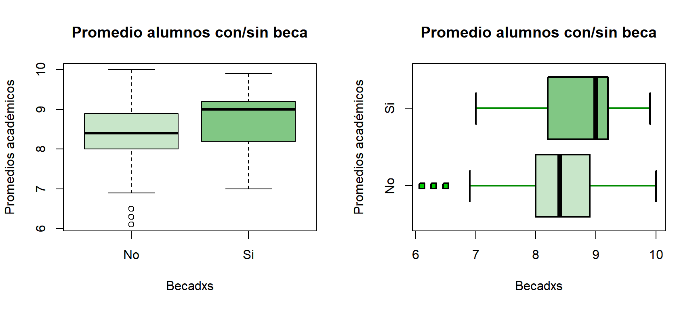
Histogramas
Los histogramas son gráficos que nos permite ver la frecuancia y
distribución de nuestros datos agrupados en clases. Para generarlo
usamos la función hist(). Por defecto se muestran las
frecuencias absolutas en clases delimitadas por la regla de Sturges,
pero se puede seleccionar ver las frecuencias relativas. Para el ejemplo
usaremos el peso como variable para graficar.
Frecuencia absoluta
# Seleccionamos el peso
hist_freqA <- hist(datosEstBio$peso,
main = "Frecuencia absoluta del peso",
xlab = "Peso (kg)",
ylab = "Frecuencia absoluta",
ylim = c(0,50),
col = palVerde, border = palVerde,
)
text(hist_freqA$mids,hist_freqA$counts,
labels=hist_freqA$counts, adj=c(0.5, -0.5))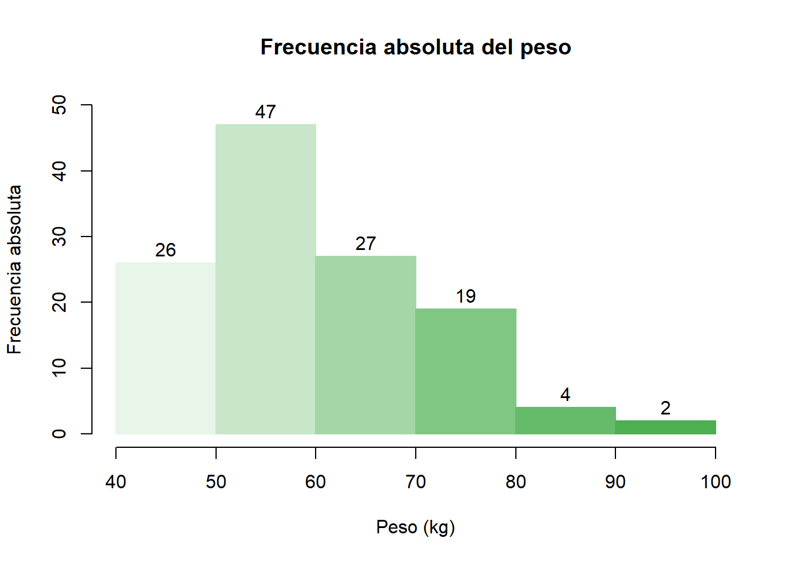

Frecuencia relativa
Para generar el gráfico de frecuencia relativa:
# Gráfico de frecuencia relativa
hist_freqR <- hist(datosEstBio$peso)hist_freqR$counts <- hist_freqR$counts/length(datosEstBio$peso)plot(hist_freqR, main = "Frecuencia relativa del peso",
xlab = "Peso (kg)",
ylab = "Frecuencia relativa del peso",
col = palVerde) +
text(hist_freqR$mids,hist_freqR$counts,
labels=hist_freqA$counts, adj=c(0.5, -0.5))## integer(0)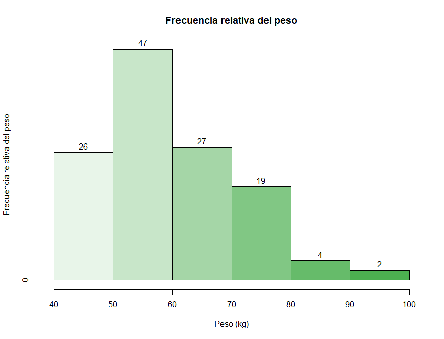
Frecuencia acumulada
Para generar el gráfico de frecuencia relativa acumulada usaremos la
función cumsum() que devuelve la suma acumulada del número
más el número anterior a éste.
# Creamos el histograma
hist_freqRA <- hist(datosEstBio$peso)# Usamos la función cumsum para que nos dé la frec. relativa acumulada
hist_freqRA$counts <- cumsum(hist_freqRA$counts/length(datosEstBio$peso))# Generamos el gráfico
plot(hist_freqRA, main = "Frecuencia relativa acumulada del peso",
xlab = "Peso (kg)",
ylab = "Frecuencia relativa acumulada del peso",
col = palVerde) +
text(hist_freqRA$mids,hist_freqRA$counts,
labels=hist_freqRA$counts, adj=c(0.5, -0.5),
cex = 0.6)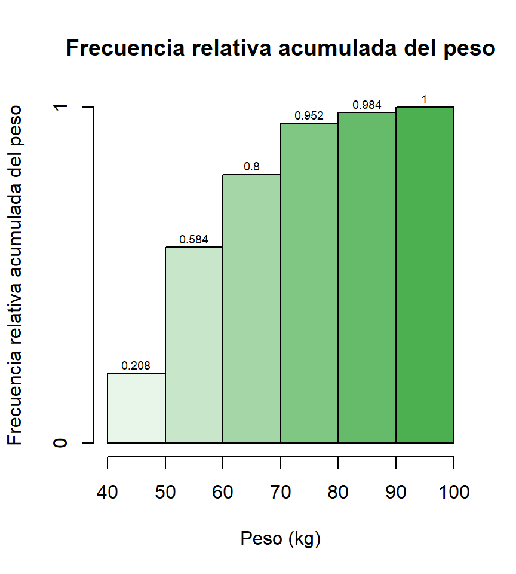